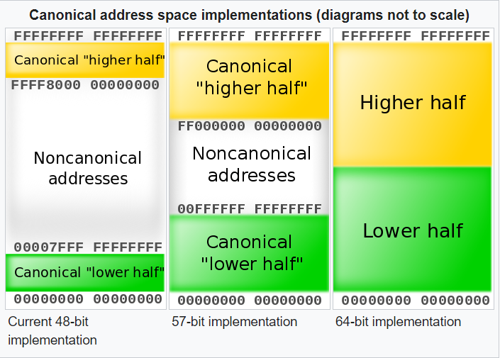
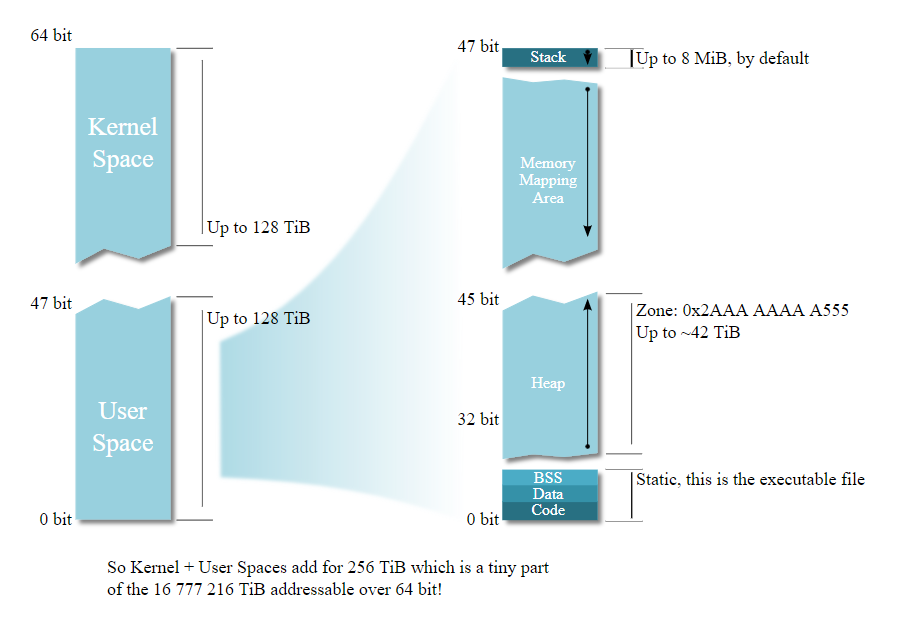
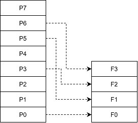

装载¶
《程序员的自我修养--链接、装载与库》 - 俞甲子，石凡，潘爱民，第六章的读书笔记，本文中的所有代码可在GitHub仓库中找到
进程虚拟地址空间¶
32位¶
32位系统的地址空间是4GB(2^32)，参见文档。其中，1GB是内核空间，3GB是用户空间：
- 内核空间：0xC0000000 ~ 0xFFFFFFFF
- 用户空间：0x00000000 ~ 0xBFFFFFFF
.text段的加载地址是：0x08048000

64位¶
64位系统的最大地址空间是16EB(2^64)，参见文档。AMD架构规定了3种64位系统的虚拟地址空间规范，分别是：48-bit实现，57-bit实现和64-bit实现。

以48-bit实现为例，可用地址空间为两个128TB(2^47)范围(如下图)，分别是：
- 内核空间：0xFFFF_8000_0000_0000 ~ 0xFFFF_FFFF_FFFF_FFFF
- 用户空间：0x0000_0000_0000_0000 ~ 0x0000_7FFF_FFFF_FFFF
- 和32位系统一样，用户空间也包含了栈区、堆区、代码段、数据段等

例子"vm_addr"通过打印__executable_start变量的值，查看进程被加载的起始地址。默认情况下，gcc会利用ASLR，随机进程的加载地址。因此，需要加入链接选项-static或者手动指定链接脚本(-T)，以固定进程加载地址，便于观察。例子中的链接脚本main.lds和默认链接脚本ld -verbose一致，指定了加载地址.：
...
SECTIONS
{
PROVIDE (__executable_start = SEGMENT_START("text-segment", 0x400000)); . = SEGMENT_START("text-segment", 0x400000) + SIZEOF_HEADERS;
...
}
- 加载地址由
SEGMENT_START("text-segment", 0x400000) + SIZEOF_HEADERS指定，运行结果是0x400318 __executable_start变量的值由SEGMENT_START("text-segment", 0x400000)指定，运行结果是0x400000- 进程运行时加载页的起始地址是
0x400000，由链接时指定的加载地址0x400318决定
> ./main
Executable Start 0x400000
Text End 0x401285 0x401285 0x401285
Data End 0x404030 0x404030
Executable End 0x404038 0x404038
> objdump -h ./main
./main: file format elf64-x86-64
Sections:
Idx Name Size VMA LMA File off Algn
0 .interp 0000001c 0000000000400318 0000000000400318 00000318 2**0
CONTENTS, ALLOC, LOAD, READONLY, DATA
1 .note.gnu.property 00000020 0000000000400338 0000000000400338 00000338 2**3
CONTENTS, ALLOC, LOAD, READONLY, DATA
> make debug
Mapped address spaces:
Start Addr End Addr Size Offset objfile
0x400000 0x401000 0x1000 0x0 ./main
0x401000 0x402000 0x1000 0x1000 ./main
0x402000 0x403000 0x1000 0x2000 ./main
0x403000 0x404000 0x1000 0x2000 ./main
0x404000 0x405000 0x1000 0x3000 ./main
0x7ffff7dbf000 0x7ffff7de4000 0x25000 0x0 /usr/lib/x86_64-linux-gnu/libc-2.31.so
装载的方式¶
内存和磁盘中的数据与指令按照“页(Page)”为单位划分成若干个页，所有装载和操作都以页为单位。通过getconf PAGESIZE命令可参看系统页的大小，一般系统都使用4096(0x1000)字节的页，如上节打印的进程虚拟内存，就是以0x1000大小的页为单位的。
实例¶
假设有一台32位机器，内存16KB，页大小为4096字节，因此共4页，地址分布如下：
| 页编号 | 地址 |
|---|---|
| F0 | 0x0000_0000 ~ 0x0000_0FFF |
| F1 | 0x0000_1000 ~ 0x0000_1FFF |
| F2 | 0x0000_2000 ~ 0x0000_2FFF |
| F3 | 0x0000_3000 ~ 0x0000_3FFF |
现有一大小为32KB的程序需要装载。程序总共被分为8页(P0 ~ P7)，无法同时装入16KB的内存。因此，我们需要动态装载：
- 如果程序刚开始执行时的入口地址在P0页，装载管理器发现程序的P0不在内存中，于是将内存F0分配给P0
- 运行一段时间以后，程序需要用到P5，于是装载器将P5转入F1；以此类推P3和P6被装入F2和F3，此时内存已满载
- 如果此时程序需要访问P4，装载器会根据特定算法，选择一个已经被分配掉的内存页来装载P4，例如按照先进先出的算法，用F0装载P4

当程序需要P4的时候，它可能会被装入F0~F3中的任意一个。如果程序使用物理地址直接进行操作，那么每次页被装入时都需要进行重定位。因此需要进程需要使用虚拟地址而不是物理地址。硬件MMU提供了虚拟地址到物理地址的转换，将物理地址隐藏在虚拟地址之下。因此，对于程序来说，物理地址是透明的，不需要关心。
在硬件的地址转换和页映射机制的帮助下，程序可以不用考虑实际硬件大小的限制。例如上例中，虽然硬件只有16KB的内存，对于32KB的程序来说，拥有独立的32KB虚拟内存，可“同时”(分时复用)加载入全部的程序，并且地址连续。
下面，我们从操作系统的角度，来阐述一个可执行文件是如何被装载和执行的。
进程的建立¶
程序启动前，需要做以下三件事情：
- 创建一个独立的虚拟地址空间
- 创建虚拟地址和物理地址的映射关系
- 创建虚拟空间只是创建映射函数所需要的相关数据结构
- 在Linux中，实际上只是分配了一个页目录(Page Directory)
- 读取可执行文件头，并且建立虚拟空间与可执行文件的映射关系
- 创建虚拟空间与可执行文件的映射关系
- 当操作系统捕获到缺页错误时，需要知道程序当前所需要的页在可执行文件中的位置
- 在Linux中，会在进程相应的数据结构中，设置段的VMA和段在ELF文件中的偏移的映射关系
- 将CPU的指令寄存器设置成可执行文件的入口地址，启动运行
- 内核堆栈和用户堆栈的切换
- CPU运行权限的切换
页错误¶
上面的步骤执行完以后，其实可执行文件的真正指令和数据都没有被装入到内存中。操作系统只是通过可执行文件头部的信息建立起可执行文件和进程虚拟内存之间的映射关系而已。
假设程序的入口地址时0x08048000，刚好是.text段的起始地址。当CPU开始执行这个地址的指令时，发现页面0x08048000 ~ 0x08049000是个空页面，于是触发一个页错误(Page Fault)。然后控制权被交给操作系统，来加载.text段到此页面，具体步骤如下：
- 利用前面提到的第二步建立的虚拟空间和可执行文件的映射关系，找到空页面所在的VMA，并计算出相应的页面在可执行文件中的偏移
- 然后在物理内存中分配一个物理页面，加载可执行文件对应位置的内容到此物理页，并将进程中该虚拟页与分配的物理页之间建立映射关系
- 最后把控制权交还给进程，进程从刚才页错误的位置重新开始执行
进程虚拟空间分布¶
ELF链接视图和执行视图¶
ELF文件中，段的权限往往只有为数不多的几种组合，基本上是三种：
- 以代码段为代表的权限为可读可执行的段
- 以数据段和BSS段为代表的权限为可读可写的段
- 以只读数据段为代表的权限为只读的段
为了有效利用内存，可将相同权限的段合并到一起当作一个段进行页映射。一个或多个属性类似的"Section"组成一个"Segment"，一个"Segment"在装载的时候只有一个对应的VMA，这样就可减少页面内部碎片，从而节省空间。
- 从"Section"的角度来看ELF文件是链接视图(Linking View)
readelf -S <elf>可查看Section
- 从"Segment"的角度来看是执行视图(Execution View)。
readelf -l <elf>可擦好看Segment
例子"segment"展示了一个简单的可执行文件两种视图的关系：
- 32个"Section"根据段的属性被分成了10个"Segment"
- 4个"LOAD"类型的"Segment"是需要被加载的，其他的诸如"NOTE"，"TLS", "GNU_STACK"都是在装载时起辅助作用的
- 其中，第二个"LOAD"类型为可读可执行的部分，包括了代码段
.text段
- 其中，第二个"LOAD"类型为可读可执行的部分，包括了代码段
> readelf -S main
There are 32 section headers, starting at offset 0xd4588:
Section Headers:
[Nr] Name Type Address Offset
Size EntSize Flags Link Info Align
[ 0] NULL 0000000000000000 00000000
0000000000000000 0000000000000000 0 0 0
[ 1] .note.gnu.propert NOTE 0000000000400270 00000270
0000000000000020 0000000000000000 A 0 0 8
[ 2] .note.gnu.build-i NOTE 0000000000400290 00000290
0000000000000024 0000000000000000 A 0 0 4
[ 3] .note.ABI-tag NOTE 00000000004002b4 000002b4
0000000000000020 0000000000000000 A 0 0 4
[ 4] .rela.plt RELA 00000000004002d8 000002d8
0000000000000240 0000000000000018 AI 0 20 8
[ 5] .init PROGBITS 0000000000401000 00001000
000000000000001b 0000000000000000 AX 0 0 4
[ 6] .plt PROGBITS 0000000000401020 00001020
0000000000000180 0000000000000000 AX 0 0 16
[ 7] .text PROGBITS 00000000004011a0 000011a0
0000000000091ec0 0000000000000000 AX 0 0 16
[ 8] __libc_freeres_fn PROGBITS 0000000000493060 00093060
0000000000001ca0 0000000000000000 AX 0 0 16
[ 9] .fini PROGBITS 0000000000494d00 00094d00
000000000000000d 0000000000000000 AX 0 0 4
[10] .rodata PROGBITS 0000000000495000 00095000
000000000001bd04 0000000000000000 A 0 0 32
[11] .stapsdt.base PROGBITS 00000000004b0d04 000b0d04
0000000000000001 0000000000000000 A 0 0 1
[12] .eh_frame PROGBITS 00000000004b0d08 000b0d08
000000000000a604 0000000000000000 A 0 0 8
[13] .gcc_except_table PROGBITS 00000000004bb30c 000bb30c
00000000000000b1 0000000000000000 A 0 0 1
[14] .tdata PROGBITS 00000000004bd0c0 000bc0c0
0000000000000020 0000000000000000 WAT 0 0 8
[15] .tbss NOBITS 00000000004bd0e0 000bc0e0
0000000000000040 0000000000000000 WAT 0 0 8
[16] .init_array INIT_ARRAY 00000000004bd0e0 000bc0e0
0000000000000010 0000000000000008 WA 0 0 8
[17] .fini_array FINI_ARRAY 00000000004bd0f0 000bc0f0
0000000000000010 0000000000000008 WA 0 0 8
[18] .data.rel.ro PROGBITS 00000000004bd100 000bc100
0000000000002df4 0000000000000000 WA 0 0 32
[19] .got PROGBITS 00000000004bfef8 000beef8
00000000000000f0 0000000000000000 WA 0 0 8
[20] .got.plt PROGBITS 00000000004c0000 000bf000
00000000000000d8 0000000000000008 WA 0 0 8
[21] .data PROGBITS 00000000004c00e0 000bf0e0
0000000000001a50 0000000000000000 WA 0 0 32
[22] __libc_subfreeres PROGBITS 00000000004c1b30 000c0b30
0000000000000048 0000000000000000 WA 0 0 8
[23] __libc_IO_vtables PROGBITS 00000000004c1b80 000c0b80
00000000000006a8 0000000000000000 WA 0 0 32
[24] __libc_atexit PROGBITS 00000000004c2228 000c1228
0000000000000008 0000000000000000 WA 0 0 8
[25] .bss NOBITS 00000000004c2240 000c1230
0000000000001718 0000000000000000 WA 0 0 32
[26] __libc_freeres_pt NOBITS 00000000004c3958 000c1230
0000000000000028 0000000000000000 WA 0 0 8
...
Key to Flags:
W (write), A (alloc), X (execute), M (merge), S (strings), I (info),
L (link order), O (extra OS processing required), G (group), T (TLS),
C (compressed), x (unknown), o (OS specific), E (exclude),
l (large), p (processor specific)
> readelf -l main
There are 10 program headers, starting at offset 64
Program Headers:
Type Offset VirtAddr PhysAddr
FileSiz MemSiz Flags Align
LOAD 0x0000000000000000 0x0000000000400000 0x0000000000400000
0x0000000000000518 0x0000000000000518 R 0x1000
LOAD 0x0000000000001000 0x0000000000401000 0x0000000000401000
0x0000000000093d0d 0x0000000000093d0d R E 0x1000
LOAD 0x0000000000095000 0x0000000000495000 0x0000000000495000
0x00000000000263bd 0x00000000000263bd R 0x1000
LOAD 0x00000000000bc0c0 0x00000000004bd0c0 0x00000000004bd0c0
0x0000000000005170 0x00000000000068c0 RW 0x1000
NOTE 0x0000000000000270 0x0000000000400270 0x0000000000400270
0x0000000000000020 0x0000000000000020 R 0x8
NOTE 0x0000000000000290 0x0000000000400290 0x0000000000400290
0x0000000000000044 0x0000000000000044 R 0x4
TLS 0x00000000000bc0c0 0x00000000004bd0c0 0x00000000004bd0c0
0x0000000000000020 0x0000000000000060 R 0x8
GNU_PROPERTY 0x0000000000000270 0x0000000000400270 0x0000000000400270
0x0000000000000020 0x0000000000000020 R 0x8
GNU_STACK 0x0000000000000000 0x0000000000000000 0x0000000000000000
0x0000000000000000 0x0000000000000000 RW 0x10
GNU_RELRO 0x00000000000bc0c0 0x00000000004bd0c0 0x00000000004bd0c0
0x0000000000002f40 0x0000000000002f40 R 0x1
Section to Segment mapping:
Segment Sections...
00 .note.gnu.property .note.gnu.build-id .note.ABI-tag .rela.plt
01 .init .plt .text __libc_freeres_fn .fini
02 .rodata .stapsdt.base .eh_frame .gcc_except_table
03 .tdata .init_array .fini_array .data.rel.ro .got .got.plt .data __libc_subfreeres __libc_IO_vtables __libc_atexit .bss __libc_freeres_ptrs
04 .note.gnu.property
05 .note.gnu.build-id .note.ABI-tag
06 .tdata .tbss
07 .note.gnu.property
08
09 .tdata .init_array .fini_array .data.rel.ro .got
由于只有可执行文件需要加载，因此只有可执行文件有程序头表Program Headers，目标文件中没有。根据程序头表中的"VirtAddr"，"MemSiz"以及系统的页大小，就可用推断出各段运行时在虚拟内存中的位置。
堆和栈¶
操作系统通过使用VMA来堆进程的地址空间进行管理。操作系统给进程空间划分出一个个VMA来管理进程的虚拟空间。基本原则是将相同权限属性的、有相同映像文件的映射成一个VMA。一个进程基本上可用分为如下几种VMA区域：
- 代码VMA，权限只读、可执行；有映像文件
- 数据VMA，权限可读写、可执行；有映像文件
- 堆VMA，权限可读写、可执行；无映像文件，匿名，可向上扩展
- 栈VMA，权限可读写、不可执行；无映像文件，匿名，可向下扩展
在Linux下，我们可通过cat /proc/<pid>/maps来查看进程的虚拟空间分布：
> cat /proc/<pid>/maps
00400000-00401000 r--p 00000000 08:05 4589838 ./main
00401000-00495000 r-xp 00001000 08:05 4589838 ./main
00495000-004bc000 r--p 00095000 08:05 4589838 ./main
004bd000-004c0000 r--p 000bc000 08:05 4589838 ./main
004c0000-004c3000 rw-p 000bf000 08:05 4589838 ./main
004c3000-004c4000 rw-p 00000000 00:00 0
014e2000-01505000 rw-p 00000000 00:00 0 [heap]
7ffda9035000-7ffda9056000 rw-p 00000000 00:00 0 [stack]
7ffda912d000-7ffda9131000 r--p 00000000 00:00 0 [vvar]
7ffda9131000-7ffda9133000 r-xp 00000000 00:00 0 [vdso]
ffffffffff600000-ffffffffff601000 --xp 00000000 00:00 0 [vsyscall]
> ls -i ./main
4589838 ./main
除了前面几个VMA映射到了可执行文件main外（可执行文件的inode是4589838），其他的VMA的文件节点都是0，表示匿名虚拟内存区域(Anonymous Virtual Memory Area)。其中有两个区域分别是堆(Heap)和栈(Stack)，他们的大小分别是140KB和132KB。并且他们的大小随着程序的运行，会动态变换。例子"max_malloc"可以打印当前系统malloc可以申请的最大堆数量。
上面映射到可执行文件的VMA，到0x004c3000就结束了，小于"Segment"中LOAD类型的最大值0x004C3980。这是因为操作系统对.bss段和__libc_freeres_ptrs段做了特殊处理，他们被直接映射到了堆中。
内核装载ELF过程¶
Linux通过系统调用execve()进行ELF的装载过程，系统调用execve()的使用方法可参考例子"minibash"，这里不再细述。
在内核中，系统调用execve()会先检查文件头，确定文件类型后，调用相应的装载函数。如，load_elf_binary()用于导入ELF文件，它的主要步骤是：
- 检查ELF文件的有效性，比如魔数、程序头表中的段(Segment)的数量
- 寻找动态链接的
.interp段，设置动态链接器路径 - 根据ELF可执行文件的程序头表的描述，堆ELF文件进行映射，比如代码、数据、只读数据等
- 初始化ELF进程环境
- 将
execve()系统调用的返回地址修改成ELF可执行文件的入口点- 静态链接的ELF可执行文件，入口是ELF文件的文件头中的
e_entry所指的地址 - 动态链接的ELF可执行文件，入口是动态链接器
- 静态链接的ELF可执行文件，入口是ELF文件的文件头中的